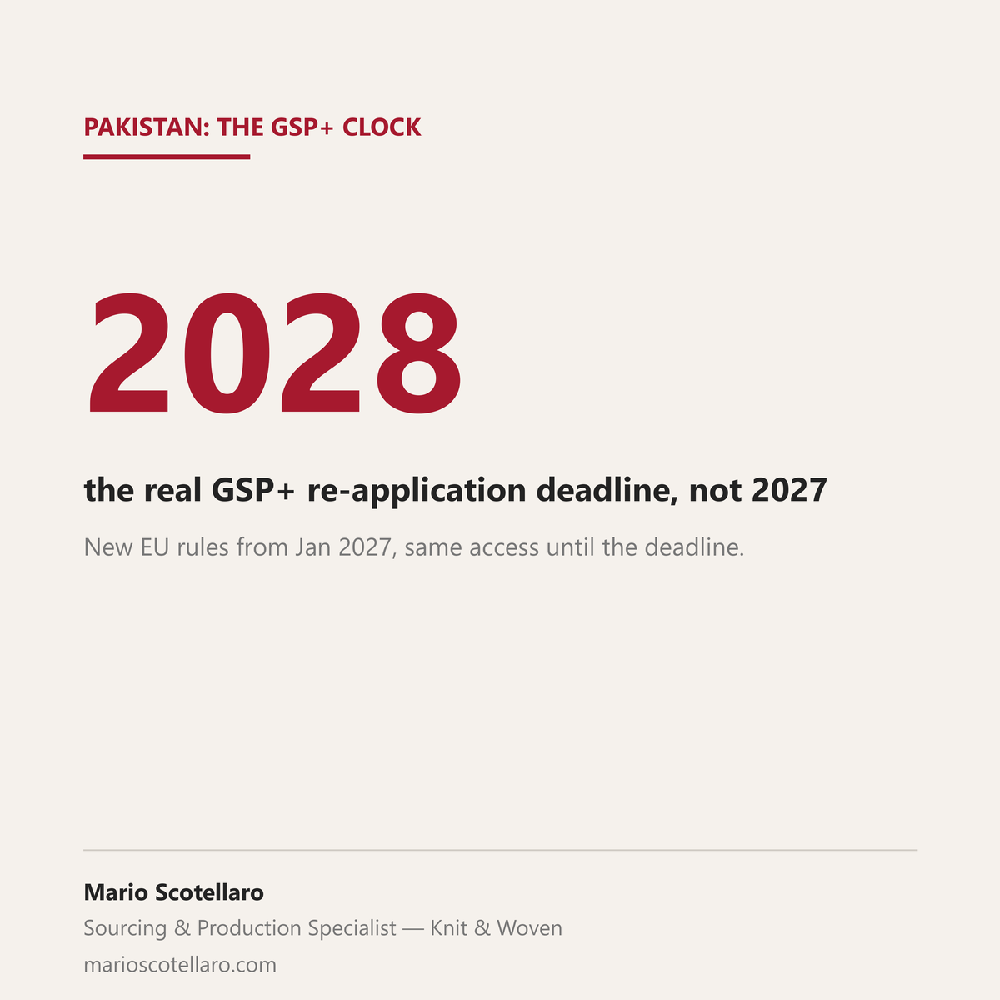

Pakistan's GSP+ access to the EU is usually described as "safe until 2027, then uncertain." The actual mechanism is more specific than that, and worth knowing before locking in a multi-year sourcing program.
The EU's new GSP regulation takes effect on 1 January 2027, replacing the 2012 framework. Current beneficiaries, Pakistan among them, don't lose access on that date: they get a two-year grace period to submit a formal re-application, running to the end of 2028. The bar is higher than before, the list of monitored international conventions rises from 27 to 32.
It isn't a paperwork formality. The European Commission's own assessment of Pakistan's 2023-2025 GSP+ compliance, published in July, found the country "has regressed in a number of areas while positive change was limited," flagging enforced disappearances, restrictions on freedom of expression, and forced and child labour among the areas needing further action. Pakistan remains the largest single GSP+ beneficiary: EUR 8.3 billion of EU imports in 2024, an estimated EUR 732 million in tariff savings, most of it in textiles and clothing.
For a brand building a multi-year sourcing plan around Pakistan-origin product landing in the EU, the end of 2028 is a real date to track, not a distant political question. Sri Lanka is on the same clock, under the same regulation. Bangladesh is a separate case worth flagging here, because the two get mixed up often: as a least developed country, it sits under Everything But Arms, a different scheme with its own conditions, not GSP+.
Sources: European Commission, Joint Staff Working Document SWD(2026) 184 final, 16 July 2026 · European Commission, Q&A on the new EU Generalised Scheme of Preferences · European Commission, Bangladesh country page · Ecotextile News, 21 September 2026 · ProPakistani, 19 September 2026